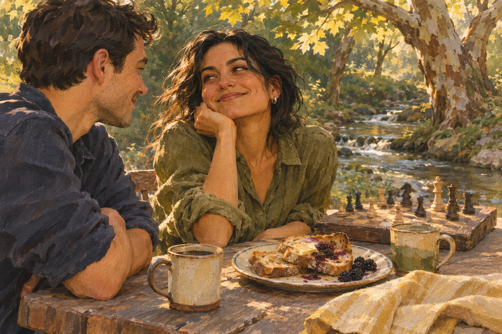
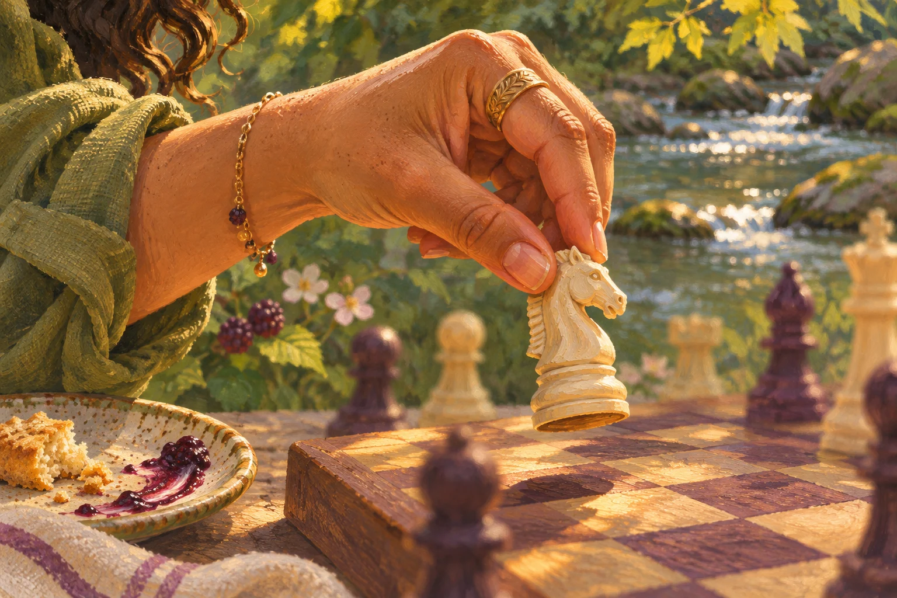

Illustrated fiction
The Chess
Continuum Hypothesis
Stale Bread with Butter and Jam Edition

By breakfast, humanity had finished chess. The agreement was simple. White moved once. Black moved once. Black offered a draw, and White accepted. The Greeks had waited thousands of years for a system of government this efficient.
Michael set the board on the picnic table beside the creek. Luz had brought a heel of bread hard enough to knock on the table with. She’d grown up in the States in a Colombian family, and when she was little she used to help her mother slice yesterday’s bread before anyone else woke up. She’d learned to cut it thin and toast it slowly. She still liked doing it that way.
“Listen,” she said, and tapped the toast with the flat of her knife.
“That’s the sound of a very old piece of bread.”
“That’s the sound of breakfast being ready.”
She wore a moss-green linen shirt with the sleeves rolled twice and small silver earrings. Her boots were muddy. She had gone down to the water ahead of him to see where last night’s rain had moved the stones. When she came back, she stood beside him and brushed a crumb from his shoulder. Michael, himself short, took a measurable amount of pride in being taller than her.
“You know,” he said, “the pact works even if it goes on forever.”
“Pass the butter.”
“Take an infinite series of games. Each time we could open with the king’s pawn or the queen’s pawn. One bit per game. You get as many possible histories as infinite binary sequences. The score in every single game is still a draw.”
Luz buttered a corner he’d missed on his toast. “So you can have all that room and still do the same thing every morning.”
Michael looked at the creek. A leaf had lodged against a stone. The water kept coming, folded around it, and went on.
“I was thinking about whether we’d finished chess,” he said.
“I was thinking about whether I wanted another piece of toast.”
“And?”
She slid the plate between them. “I did.”
The third ply
Luz played 1.e4. Michael answered 1...e5. He’d practiced making the offer with an expression of dignified resignation, but Luz caught his eye halfway through and he smiled.
“Draw?”
She took a bite. The toast broke audibly. One drop of blackberry jam landed beside the board, and she put her thumb on it before it could reach a square.
“Do you want the draw?” she asked.
“I want to know what you’d do if I offered it.”
“Oh,” she said. “Then give me a second.”

She reached for the king’s knight and placed it on f3.
GREEK CHORUS THE THIRD PLY!
Michael stared at the knight. “Bringer of Light,” he said. “A little Lucifer before nine in the morning.”
Luz looked up. She took a second to check whether he meant it affectionately, then pushed his toast toward him. “Eat something, Michael.”
He did. The butter had gone soft all the way to the edges.
“Everybody agreed to stop,” he said.
“I thought we were deciding whether we wanted to stop.”
Michael looked down. The knight attacked his e-pawn. All the wonderful things he knew about infinity had given him precisely zero additional defenders.
“You could play 2...Nc6,” Luz said.
“I know.”
“I could take a walk while you consider it.”
“How far?”
“As far as the bend.” She stood, then waited beside the table. “Come with me when you’ve moved.”
He brought the knight out and left the board where it was. At the bend she took his hand. They stood there until the leaf worked loose of the stone and came by their feet.
“We should go back soon,” said Michael.
“Why?”
“I want to see your next move.”